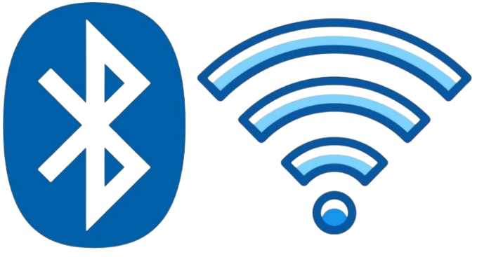

Tehnologije pametnega doma
Tehnologije pametnega doma predstavljajo osnovo za delovanje sodobnih avtomatiziranih bivalnih okolij. Gre za kombinacijo različnih komunikacijskih protokolov, platform, sistemov in naprav, ki skupaj tvorijo usklajen in inteligenten sistem za upravljanje domačega okolja. Cilj teh tehnologij je omogočiti uporabnikom boljšo povezanost, udobje, varnost ter energetsko učinkovitost z minimalnim posegom v vsakodnevne navade.
Ena ključnih sestavin pametnega doma so brezžični komunikacijski protokoli, ki omogočajo, da se naprave med seboj povežejo brez potrebe po kablih. Najpogosteje uporabljen protokol v pametnih domovih je Wi-Fi, saj omogoča hitro in stabilno povezavo ter podpira širok spekter naprav – od kamer do pametnih vtičnic in termostatov. Vendar pa Wi-Fi ni edina rešitev. V ospredje prihajajo tudi drugi protokoli, kot so Zigbee, Z-Wave in Thread, ki so posebej zasnovani za pametne naprave z nizko porabo energije. Ti protokoli so idealni za povezovanje senzorjev, pametnih stikal in naprav, ki niso ves čas aktivne, saj omogočajo boljšo učinkovitost in daljše trajanje baterij. Poleg tega je v nekaterih primerih uporaben tudi Bluetooth, zlasti za naprave, ki so v neposredni bližini uporabnikovega telefona, kot so pametne ključavnice ali svetila.

Za učinkovito delovanje celotnega sistema so pomembni tudi centralni nadzorni sistemi, t. i. pametni hubi, ki povezujejo različne naprave v enoten ekosistem. Takšni sistemi delujejo kot “možgani” pametnega doma, saj omogočajo usklajeno delovanje naprav različnih proizvajalcev ter njihovo centralizirano upravljanje. Med najpogosteje uporabljenimi so Apple HomeKit, Google Home, Amazon Alexa in Samsung SmartThings. Ti sistemi ne le poenostavijo upravljanje doma, temveč tudi omogočajo večjo interoperabilnost med napravami, ki bi sicer delovale ločeno.
Vse bolj priljubljeno postaja tudi upravljanje doma z glasom, kar omogočajo napredni glasovni pomočniki. Uporabniki lahko z enostavnimi ukazi vklopijo luči, nastavijo temperaturo ali zaženejo glasbo, pri tem pa jim ni treba uporabiti niti telefona niti stikala. Glasovni pomočniki, kot so Amazonova Alexa, Googlov Assistant in Applova Siri, temeljijo na umetni inteligenci in so povezani z oblakom, kar jim omogoča stalno učenje, izboljševanje razumevanja ukazov ter hitro odzivnost.
Posebno vlogo v pametnem domu ima tudi tehnologija avtomatizacije, ki omogoča ustvarjanje prilagojenih scenarijev. Uporabnik lahko nastavi pravila, kot je na primer “ko pridem domov, naj se prižgejo luči, ogrevanje naj se vklopi in začne naj igrati glasba.” Takšni scenariji temeljijo na logiki "če-potem" (ang. if-this-then-that, IFTTT), ki omogoča preprosto, a izjemno učinkovito avtomatizacijo različnih procesov v domu. Avtomatizacija povečuje udobje in zmanjšuje potrebo po ročnem upravljanju naprav.
Nenazadnje je ena od ključnih tehnologij pametnega doma povezava z oblakom. Preko interneta se pametne naprave povežejo z oddaljenimi strežniki, kar omogoča dostop do naprav na daljavo, sprotne posodobitve sistemov ter uporabo naprednih algoritmov za učenje in prilagajanje vedenja naprav. Povezava z oblakom omogoča tudi večjo fleksibilnost, saj lahko uporabnik dom upravlja iz kateregakoli kraja z uporabo pametnega telefona ali tablice.
Vse omenjene tehnologije skupaj tvorijo jedro pametnega doma in omogočajo, da ta deluje ne le kot skupek posameznih pametnih naprav, temveč kot celovit, usklajen in inteligenten sistem, ki se prilagaja potrebam uporabnika in hkrati omogoča enostavno upravljanje ter večjo kakovost bivanja.